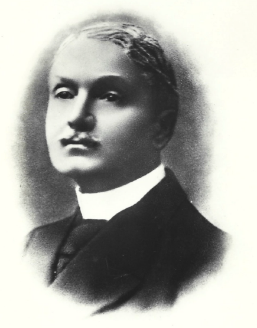

Nasce Emilio Gallavresi
Emilio Gallavresi, oltre a dare il nome all’attuale Palazzo del Municipio in quanto ultimo proprietario, fu il principale promotore del socialismo a Caravaggio e nella Gera d’Adda. Nato nel 1856, si formò politicamente in un contesto tutt’altro che favorevole alla sinistra.
Il territorio era segnato da esperienze fragili e discontinue, come la Lega dei Contadini (1897) e la Lega dei Muratori (1898), oltre a scioperi diffusi. Fu con Gallavresi che il Partito Socialista Italiano, fondato nel 1892, riuscì a radicarsi nella vita politica locale. Infatti, sebbene Caravaggio non si potesse descrivere come un borgo socialista, non mancava di supportare i propri concittadini.
Gallavresi fu quindi eletto deputato nelle legislature 1919–1921 e 1921–1924. Furono anni in cui a Caravaggio anche si riuscì ad affermare un’amministrazione socialista, guidata da Mario Bamfi, che verrà, tuttavia, travolta dall’ascesa del fascismo poco dopo.
